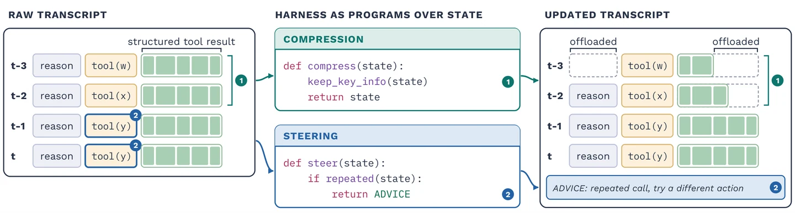
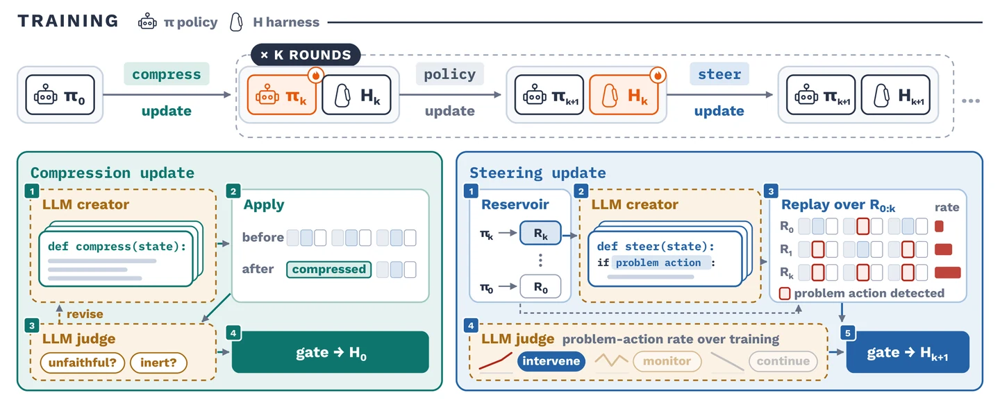
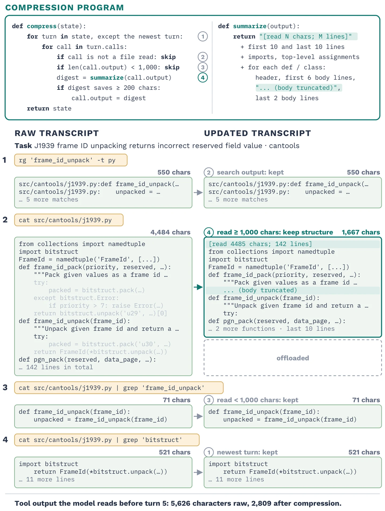
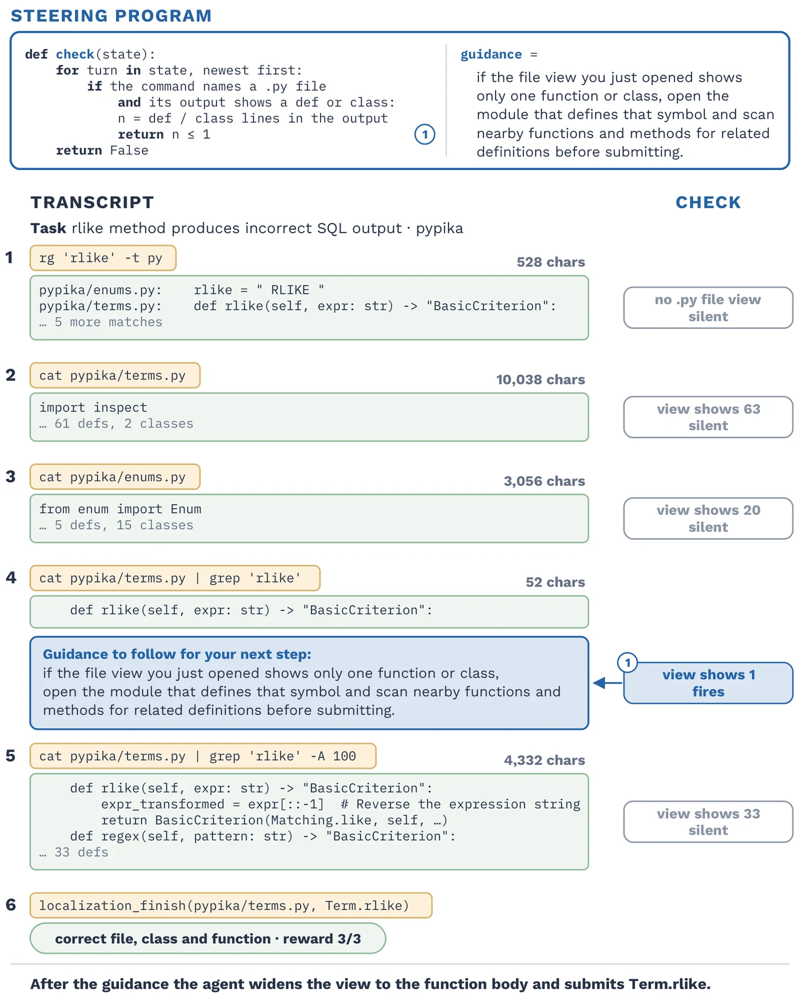
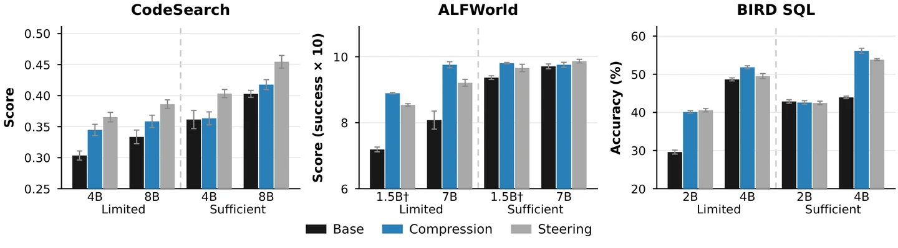
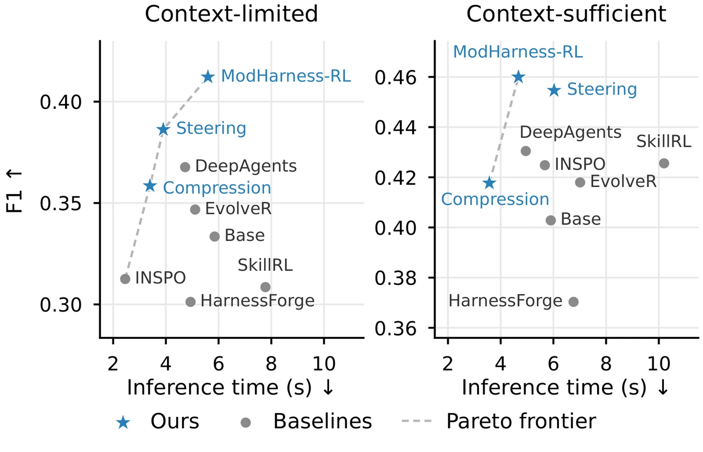
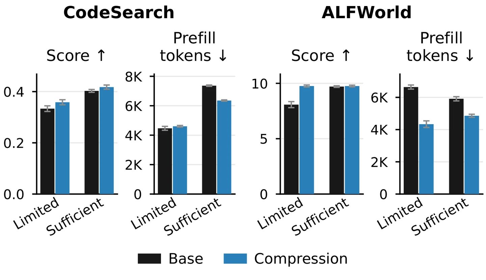

ModHarness-RLRecasting Harnesses as Learnable and Evolving Programs for Agentic RL
1The Pennsylvania State University 2LinkedIn 3University of California, Santa Barbara
*Equal contribution †Work done during an internship at LinkedIn.
TL;DR
- Agentic RL trains under a hand-written harness that stays fixed, but an effective harness depends on the task, the data and the model, and keeps changing as the model trains.
- ModHarness-RL recasts the harness as programs over a structured State, a Compression program that assembles the model's context and a Steering program that supplies guidance when behavior deviates.
- During RL training, candidate programs are proposed from recent trajectories, verified by execution, and replayed over past trajectories, so the harness evolves with the model.
- On CodeSearch, ModHarness-RL improves over the fixed-harness baseline by 14–24% in every setting and by 5–12% over the strongest memory, skill, prompt and harness evolution baseline. On ALFWorld and BIRD SQL, each program alone improves in seven of eight settings.
Abstract
Agentic reinforcement learning (RL) increasingly relies on a harness, the scaffold around the model that decides what it sees of its own interaction and what guidance it receives. Most existing approaches train under a hand-written harness that stays fixed throughout. However, an effective harness depends on the domain, the data and the model, and keeps changing as the model trains. We introduce ModHarness-RL, which recasts the harness as programs that are learned from data and evolve as the model trains with RL. ModHarness-RL records the interaction as structured State, a set of typed blocks, and two core components of the harness are programs over these blocks, a Compression program that assembles the accumulated history into the model's context and a Steering program that supplies guidance when behavior deviates. During RL training, candidate programs are proposed from recent trajectories, verified by execution, and replayed over past trajectories, so the harness tracks how the model's behavior shifts. We study CodeSearch in depth and further analyze ALFWorld and BIRD SQL, with models from 1.5B to 8B. The proposed Compression and Steering mechanisms improve held-out performance over the fixed-harness baseline in most settings. These results suggest that a harness for agentic RL can be learned from the task's data and evolved with the model.
How should a harness be represented to be learned and evolved?
ModHarness-RL represents the harness as programs over a structured State, which records the interaction as typed blocks such as each turn's reasoning, tool call and tool result. These blocks are the building blocks from which ModHarness-RL assembles the harness. A Compression program reassembles the blocks into organized model context under a fixed budget, and a Steering program reads them to detect when behavior deviates and appends guidance.

Programs over these blocks have three properties that suit learning and evolving.
- Learnable, since an LLM can write them directly from training trajectories and their corresponding rewards.
- Computationally inexpensive, allowing them to be run on every turn of every trajectory without calling another model.
- Testable, allowing each candidate harness to be replayed over stored trajectories to evaluate its fitness before it is accepted or rejected.
How can the harness be learned and evolved with the model?
As training progresses, model behaviors change. Failure modes from previous model versions may become less frequent, while new ones may emerge. ModHarness-RL therefore uses an end-to-end pipeline that updates the harness from online data. It summarizes experiences from training trajectories, proposes and verifies candidate programs, and validates them on held-out training tasks. To evolve the harness with the model, we alternate this pipeline with RL updates of the model weights.

compress is optimized against the base policy, and policy updates under the latest harness are then alternated with steer updates. Both optimizations propose programs from the reservoir, verify them by execution, and install a winner only through a held-out gate.The key insight is that the harness should guide only what the model cannot learn on its own.
A Replay mechanism reruns each candidate Steering program over trajectories from past training steps and installs it only for the failures that persist as the model trains.
A learned Compression program and Steering trigger
The program shortens only file reads of at least 1,000 characters in earlier turns, replacing each with a digest that keeps the imports, the definitions, and the first and last lines. Search output, short reads and the newest turn are kept as they are. In this episode, the tool output the model reads before turn 5 falls from 5,626 to 2,809 characters, while the structure of the file stays visible.

compress program applied to a stored training episode. Top: pseudocode of the generated program. Bottom: turns 1–4 of the episode as recorded (left) and as shown to the model (right); numbered rules match the program. Grey lines are dropped, and teal lines are written by the program.The check stays silent while the agent searches and opens whole files. After turn 4, the agent's view shows a single function, so the check fires and the guidance asks the agent to scan nearby definitions before submitting. The agent then widens the view to the function body and submits Term.rlike, which earns the full reward of 3/3 for the correct file, class and function.

steer trigger serving guidance in a live training episode. Top: pseudocode of the generated check and its guidance. Bottom: the episode as recorded, with the check evaluated after every turn (right); the numbered rule matches the program. The check fires once, after turn 4, and the guidance is appended as a message before the model's next turn.Results
On CodeSearch, ModHarness-RL improves over the fixed-harness baseline by 14 to 24% in every setting and scores highest against memory, skill, prompt and harness evolution baselines, by 5 to 12% over the strongest of them. On ALFWorld and BIRD SQL, each program alone improves over the base harness in seven of eight settings.
| Context-limited | Context-sufficient | |||||||||
|---|---|---|---|---|---|---|---|---|---|---|
| Method | Lite | Verified | Pro | Overall | Δ | Lite | Verified | Pro | Overall | Δ |
| Qwen3-4B | ||||||||||
| Zero-shot | 0.172 | 0.139 | 0.113 | 0.142 | −53% | 0.138 | 0.111 | 0.105 | 0.119 | −67% |
| Base harness | 0.349 | 0.328 | 0.224 | 0.303 | — | 0.385 | 0.351 | 0.346 | 0.361 | — |
| DeepAgents | 0.358 | 0.334 | 0.292 | 0.329 | +9% | 0.407 | 0.380 | 0.310 | 0.368 | +2% |
| INSPO | 0.323 | 0.317 | 0.253 | 0.299 | −1% | 0.400 | 0.408 | 0.322 | 0.379 | +5% |
| EvolveR | 0.327 | 0.327 | 0.219 | 0.294 | −3% | 0.406 | 0.416 | 0.322 | 0.384 | +6% |
| HarnessForge | 0.372 | 0.351 | 0.289 | 0.339 | +12% | 0.407 | 0.394 | 0.358 | 0.388 | +7% |
| SkillRL | 0.359 | 0.374 | 0.308 | 0.349 | +15% | 0.438 | 0.400 | 0.341 | 0.395 | +9% |
| + Compression | 0.393 | 0.356 | 0.277 | 0.345 | +14% | 0.374 | 0.374 | 0.338 | 0.363 | +1% |
| + Steering | 0.426 | 0.361 | 0.302 | 0.365 | +20% | 0.439 | 0.410 | 0.356 | 0.403 | +12% |
| ModHarness-RL | 0.422 | 0.388 | 0.282 | 0.368 | +21% | 0.454 | 0.432 | 0.381 | 0.424 | +17% |
| Qwen3-8B | ||||||||||
| Zero-shot | 0.090 | 0.084 | 0.095 | 0.089 | −73% | 0.098 | 0.097 | 0.059 | 0.086 | −79% |
| Base harness | 0.363 | 0.357 | 0.272 | 0.333 | — | 0.431 | 0.419 | 0.352 | 0.403 | — |
| DeepAgents | 0.433 | 0.371 | 0.289 | 0.368 | +10% | 0.465 | 0.456 | 0.361 | 0.430 | +7% |
| INSPO | 0.331 | 0.358 | 0.241 | 0.313 | −6% | 0.477 | 0.441 | 0.347 | 0.425 | +5% |
| EvolveR | 0.381 | 0.374 | 0.277 | 0.347 | +4% | 0.443 | 0.450 | 0.353 | 0.418 | +4% |
| HarnessForge | 0.350 | 0.348 | 0.192 | 0.301 | −10% | 0.430 | 0.395 | 0.274 | 0.370 | −8% |
| SkillRL | 0.338 | 0.308 | 0.275 | 0.309 | −7% | 0.478 | 0.428 | 0.362 | 0.426 | +6% |
| + Compression | 0.392 | 0.356 | 0.323 | 0.359 | +8% | 0.453 | 0.461 | 0.329 | 0.418 | +4% |
| + Steering | 0.453 | 0.397 | 0.298 | 0.386 | +16% | 0.483 | 0.487 | 0.385 | 0.455 | +13% |
| ModHarness-RL | 0.441 | 0.437 | 0.351 | 0.412 | +24% | 0.492 | 0.473 | 0.409 | 0.460 | +14% |
| GPT-5-mini | ||||||||||
| Zero-shot | 0.113 | 0.108 | 0.055 | 0.094 | — | 0.404 | 0.389 | 0.298 | 0.366 | — |
CodeSearch validation, F1 averaged over the three granularities. Δ is the relative change in Overall over the base harness of the same model, and bold is best in a column within a model. Shaded rows are ours. The flame marks an RL-trained model and the snowflake one that was not fine-tuned.

On CodeSearch, Steering improves over the base harness by 15% on average over the four settings, which is better than Compression at 6%. On ALFWorld under a limited budget, averaged over the two models, Compression improves by 22%, which is better than Steering at 16%.
Score and cost under a limited and a sufficient context budget
Under a limited budget, performance tends to improve, with 8% improvement for Qwen3-8B on CodeSearch and 21% improvement for Qwen2.5-7B on ALFWorld. Under a sufficient budget, Compression uses 74% fewer tokens on ALFWorld and 10% fewer on CodeSearch.


Citation
@article{he2026modharness,
title = {ModHarness-RL: Recasting Harnesses as Learnable and Evolving Programs for Agentic RL},
author = {He, Zelin and Zhu, Jason and Helwig, Jacob and Liu, Yujian and An, Li and
Jain, Rohit and Chang, Shiyu and Geramifard, Alborz},
journal = {arXiv preprint},
year = {2026}
}